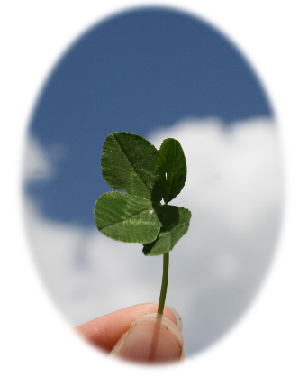

Everyone will have fond memories of wandering and squatting for a long time under the shamrock as a child looking for a four-leaf clover.
When the clover flowers start to bloom, I remember making flower rings and playing around the field with my friends. Luckily if I found a four-leaf clover, I carefully placed it on a bookmark.
Clovers can be found almost anywhere near the area with a lot of sunlight. Although the country of origin is Europe, clovers are very adaptable enough to spread to Oman except for the polar regions, jungles, and deserts.
The four leaves represent...
Hope
Faith
Love
Luck
So why is this mutated four-leaf clover so-called a symbol of good fortune?
“If a man walking in the fields
find any four-leaved grass,
he shall in a small while
after find some good thing.”
-Sir John Melton 1620-
Out of the many origins, the most famous four-leaf clover bringing good luck is probably from the story of Napoleon Bonaparte. When Napoleon suddenly bent down to pick the four-leaf clover, a bullet passed over his head and saved his life. Since then, many have believed that a four-leaf clover had a symbol of good luck.

When I walk along the road and see a bunch of clovers, I still take a quick glance and try to find the hidden four-leaf clover among the countless three-leaf clovers.
Lastly, the combined three-leaf clover we are familiar with means 'happiness'. A four-leaf clover means 'lucky,’ but in fact, I believe that the reason we can see more three-leaf clovers is that there is big and small happiness around us like a three-leaf clover in our everyday life...